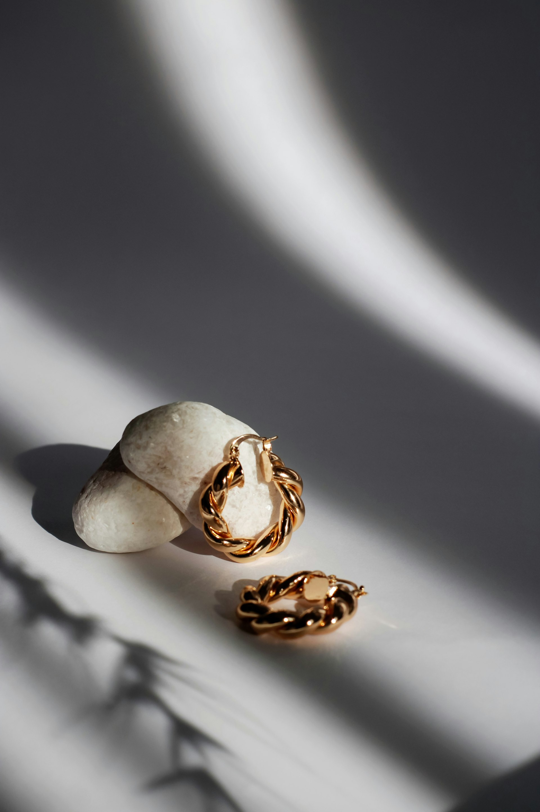
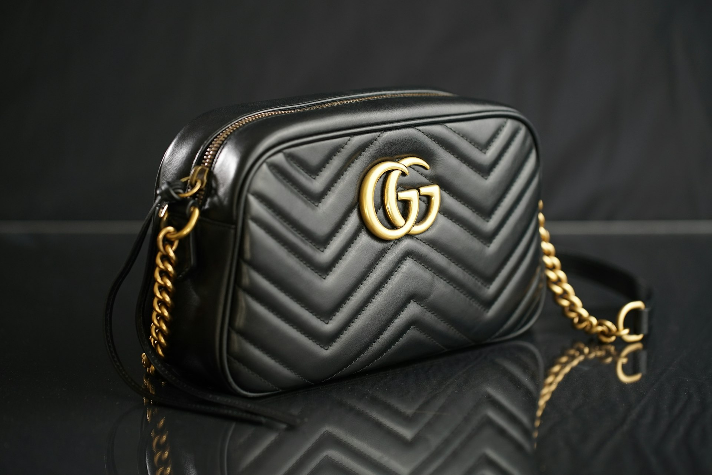
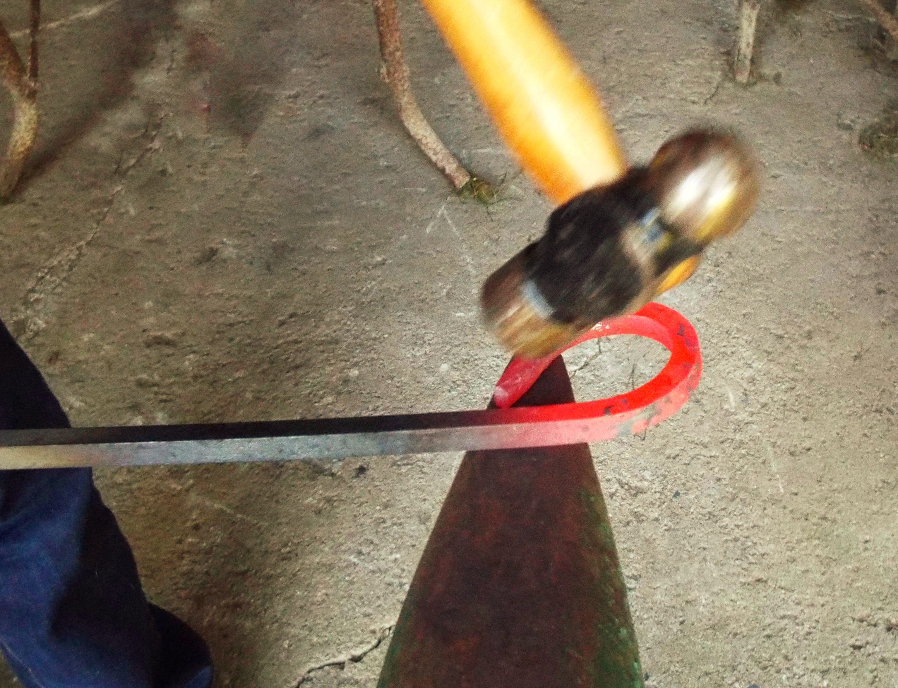

Un bolso de lujo con un precio de venta de 2.000 € tiene un coste de producción real de unos 180 dólares. Treinta por ciento de ese coste son los materiales. Cuarenta por ciento, la mano de obra. El resto, hardware, logo y margen de fábrica. En algunas casas del lujo corporativo el multiplicador entre el coste y el precio llega a ser de veinte veces. Es decir: pagas cien para que te cobren dos mil.
Cuando te enteras de esto, tienes dos reacciones posibles. La primera es indignación: «¿todo esto por un logo?». La segunda, más interesante, es una pregunta que cambia el juego si eres artesano o artesana: «¿y si lo que justifica ese precio — el tiempo, la maestría, los materiales selectos, la historia real — ya existe en lo que yo hago a diario… y simplemente no se está cobrando?».
Esa es la tesis de este artículo. Tu artesanía ya es un producto de lujo. Lo único que falta es que se perciba así. Y en 2026, por primera vez en décadas, las condiciones de mercado están de tu lado.
En este post vas a encontrar los datos que demuestran por qué el lujo corporativo está en crisis, por qué la artesanía real está creciendo, cómo funciona la psicología del precio, qué están haciendo los artesanos españoles que ya cobran lo que merecen, y las 7 palancas concretas para posicionar tu trabajo en su valor real. Sin humo. Sin fórmulas mágicas. Sin pedirte que seas lo que no eres.

Joyería artesanal: el oficio real, en directo. Lo que las grandes marcas del lujo intentan reproducir desde hace una década.
1. El lujo corporativo está en crisis (y esa es tu oportunidad)
Empecemos por los datos que casi nadie está mirando.
Según el informe Bain & Altagamma 2025, el mercado global del lujo se ha estancado en 1,66 billones de dólares. No ha caído, pero lleva tres años sin crecer. Lo realmente llamativo no es eso. Es otra cifra: la base de clientes del lujo ha pasado de 400 millones de personas en 2022 a 340 millones en 2025. Sesenta millones de personas que antes compraban lujo han dejado de hacerlo. Son más habitantes que los de España entera.
Los márgenes operativos de las grandes casas han bajado del 21% en 2022 al 15-16% en 2025. El propio Bain, que es literalmente el consultor estratégico del sector, lo resume así: la estrategia de "subir precios sin justificarlos" (lo que llaman price elevation) se ha agotado. Lo que el informe pide para los próximos años es "restaurar el valor, la credibilidad y la conexión".
Ahora mira este otro dato. En el tercer trimestre de 2025, mientras LVMH perdía un 4,4% de ingresos y Kering caía un 16%, Hermès subía un 11,3%. ¿Qué hace Hermès que los otros no hacen? Una cosa muy concreta: comunica el oficio como valor central. No como decoración. Como producto.
Hermès tiene 5.200 artesanos repartidos en 52 talleres franceses. Cada bolso Birkin se hace entero por una sola persona y le lleva entre 18 y 24 horas. Esa información no está escondida: es el corazón de su marketing. Sus redes sociales no muestran celebrities. Muestran manos. Muestran herramientas. Muestran procesos. Muestran tiempo. Y la gente paga veinte mil euros por un bolso porque cree en esa historia — y la cree porque es verdad.
El resto del lujo corporativo está intentando copiar ese modelo a posteriori. LVMH ha invertido más de 100 millones de euros desde 2014 en su Institut des Métiers d'Excellence, donde ha formado a más de 1.800 aprendices de oficios artesanales. Kering ha lanzado su "Craftsmanship Journey", que son básicamente colaboraciones con artesanos toscanos. El mensaje implícito es claro: las grandes marcas del lujo están comprando a precio de oro lo que tú ya tienes.
¿Tú te das cuenta de lo que significa eso? Significa que el mercado del lujo no está decreciendo porque la gente no quiera pagar precios altos. Está decreciendo porque la gente ha dejado de creerse las historias vacías. El mercado está buscando autenticidad, oficio real, proceso manual, materiales verdaderos. Y eso es exactamente lo que un artesano serio en España ya está produciendo. La pregunta, por tanto, no es «¿puedo yo competir con el lujo?». La pregunta es «¿estoy aprovechando que el lujo se ha convertido en lo que yo ya soy?».
2. Lo que el lujo y la artesanía comparten (y casi nadie dice en voz alta)
Vamos a hacer un ejercicio incómodo. Vamos a poner lado a lado las cosas que hacen que un producto sea considerado "de lujo" y las cosas que definen una pieza artesanal bien hecha.
Cualidades del "lujo"
- Exclusividad / series limitadas
- Maestría · savoir-faire
- Historia · herencia
- Materiales selectos
- Tiempo de producción largo
- Atención obsesiva al detalle
Cualidades de tu artesanía
- Producción a mano (escasez natural)
- Años perfeccionando tu técnica
- Tradición real, no inventada
- Materiales locales y trazables
- Imposible acelerar el torno o el horno
- Instinto desarrollado por repetición
Exclusividad. El lujo fabrica series limitadas. Tú produces a mano. Por definición, cada pieza que sale de tu taller es única o de tirada cortísima. Ellos limitan la producción artificialmente para crear deseo. La tuya está limitada de forma natural porque no hay forma humana de acelerar el torno, el bastidor o la horma. Misma escasez, distinto origen.
Maestría. El lujo presume de "savoir-faire". Esa palabra, en francés, significa literalmente "saber hacer". Un maestro marroquinero de Hermès tarda entre dos y cinco años en formarse antes de tocar un solo bolso del catálogo. Un alfarero tradicional español lleva a veces quince o veinte años perfeccionando su técnica antes de considerarse maestro. Es la misma cosa. A veces más.
Historia. Las marcas del lujo contratan agencias para inventarse narrativas de herencia, raíces y tradición. Tú las tienes de verdad. Si tu taller es el tercero de tu familia dedicado a la cestería, esa historia es real. Si tu técnica viene de un oficio que se practica en tu pueblo desde hace siglos, esa historia es real. Si eres tú sola o tú solo en un taller y lo has aprendido a base de frustración, tiempo y años, esa historia también es real — y muchas veces es la más poderosa de todas.
Materiales selectos. Las grandes marcas del lujo hablan de "cuero de becerro de primera criado en la Toscana". Tú quizá trabajas con lino cultivado en tu comarca, con arcilla extraída de un yacimiento local, con madera de un árbol caído que conoces por nombre, con lana de oveja merina de un pastor al que llamas por teléfono. Ellos necesitan explicar sus materiales. Los tuyos se explican solos.
Tiempo. Este es el factor que más obsesiona al lujo corporativo actual, porque saben que el tiempo es imposible de falsificar. 18 horas por un Birkin. 20 horas por una pieza textil tradicional. Semanas para una pieza cerámica que pasa por horno, enfriamiento, corrección, segundo horno, esmalte, tercer horno. La prisa es enemiga del lujo y enemiga de la artesanía por la misma razón.
Atención al detalle. Cada costura, cada acabado, cada textura. Esto no se enseña en ningún curso: se desarrolla como un instinto tras años de repetición. Tanto un sastre napolitano como una bordadora de Lagartera lo tienen. Los dos saben exactamente cuándo algo "está bien" sin necesidad de medirlo.
Si has leído las seis características con honestidad, hay muy pocas probabilidades de que no te hayas reconocido en al menos cuatro. Y si te has reconocido en cuatro, la pregunta deja de ser filosófica y se vuelve estratégica: ¿por qué tu pieza se percibe como artesanía local y un bolso con las mismas cualidades se percibe como objeto de deseo internacional? Seguimos.

Cuero y marroquinería: el mismo oficio que justifica los 20.000 € de un Birkin. Tiempo, técnica y materia.
3. La diferencia real: márgenes, percepción y por qué pagas con tu cuerpo
Vamos con la parte incómoda. Hay una diferencia real entre una marca de lujo y un artesano medio. No es la calidad. No es el oficio. No es la historia. Es el margen sobre el coste real.
Una marca de lujo vende un bolso con un multiplicador de entre 10 y 20 veces el coste de producción. Un artesano español medio vende su pieza con un multiplicador que, si analizas honestamente el tiempo real invertido, raras veces supera el 2x. Muchas veces está por debajo.
¿En qué gastan ese margen las grandes marcas de lujo? Mayoritariamente, en marketing. Publicidad masiva, celebrity endorsement, tiendas en las mejores calles del mundo, campañas institucionales, desfiles en Milán, revistas pagadas. Ese margen no es un abuso: es lo que financia la construcción sistemática de la percepción.
¿En qué gastas tú ese margen que no tienes? En crear. En materiales, en horas, en salud física (la cerámica destroza las muñecas, la forja las cervicales, el bordado los ojos, el cuero los hombros), en la precariedad que supone no tener vacaciones pagadas ni baja por enfermedad, en aguantar meses de baja facturación en invierno. Las marcas de lujo pagan por percepción. Tú pagas con tu tiempo, tu cuerpo y tu talento.
Esto no es injusto porque cobren mucho. Es injusto porque tú, haciendo lo mismo (y a veces mejor), estás cobrando poco. Y aquí entra la ciencia del comportamiento, que explica por qué.
El psicólogo y economista Dan Ariely hizo un experimento famoso: pedía a un grupo de gente que escribiera los dos últimos dígitos de su número de la Seguridad Social y que, a continuación, dijera cuánto estarían dispuestos a pagar por varios productos (vino, chocolate, electrónica). Las personas cuyos dígitos eran altos ofrecían precios entre un 60% y un 120% más altos que las personas cuyos dígitos eran bajos, por el mismo producto. El número de la Seguridad Social no tiene, obviamente, absolutamente ninguna relación con el valor del vino. Pero funcionaba como ancla: el primer número que entra en tu cabeza condiciona todas las valoraciones posteriores.
Efecto anclaje aplicado a tu taller: el primer precio que tus clientes ven asociado a tu nombre se convierte en su anclaje. Si esa primera impresión es un cuenco a 18 € en un mercadillo, todos tus precios posteriores van a ser juzgados contra esa referencia, por mucho que mejores el producto o por mucho que pongas un mantel de lino debajo.
La investigación académica sobre storytelling y disposición a pagar va en la misma dirección. Múltiples estudios han demostrado que los consumidores expuestos a una historia real sobre el origen y el proceso de un producto describen la marca en términos mucho más positivos y están dispuestos a pagar precios significativamente más altos que los consumidores que solo ven el producto. Esto es especialmente cierto cuando la historia incluye una ubicación geográfica concreta y un creador identificable.
Dicho de otra manera: la percepción no es un añadido al valor; es parte constitutiva del valor. No estamos hablando de engañar a nadie. Estamos hablando de que el mercado solo puede pagar por lo que es capaz de ver, y si tú no muestras lo que hay detrás de tu pieza, literalmente no existe a efectos comerciales.
4. La verdad incómoda (y por qué no es tu culpa)
Aquí hay una tentación, y es caer en el "culpar al artesano". Lo hemos visto muchas veces en Oficios Circulares. Un artesano con veinte años de oficio, piezas magníficas, técnica depurada — y cuando llega el momento de vender, se bloquea. Cobra barato. Se disculpa por el precio. Regala piezas. Acepta encargos a pérdidas.
Y luego llega alguien de fuera y le dice: «Es que no sabes venderte». Como si fuera una falta de carácter.
No lo es. Es la consecuencia lógica de un sistema que durante décadas ha tratado la artesanía como si fuera un eslabón menor de la economía. Mira las cifras del sector en España, porque merece la pena verlas juntas por una vez. Según los análisis más recientes del mercado, la artesanía española mueve 6.629 millones de euros al año, con más de 63.100 empresas y 208.600 empleos directos. Representa el 4,6% del Valor Añadido Bruto manufacturero. No es un sector residual: es un cuarto de millón de personas trabajando con las manos en España.
Pero mira también la otra parte de la foto: el crecimiento del sector es del 2,8% anual. Sostenido, sí, pero moderado. Cuando una actividad genera 6.600 millones de euros y 208.000 empleos y solo crece al 2,8%, eso no es un sector sano: es un sector contenido. Contenido por márgenes bajos, por dificultades de distribución, por una percepción social que asocia lo hecho a mano con "precios de mercadillo" y por la ausencia de una estrategia-país que empuje la artesanía al lugar que ocupa en otros países europeos.
Por comparar: la alimentación y bebidas gourmet representan el 46,3% de la facturación del sector artesano español. Lo que significa que todo lo demás — cerámica, textil, cuero, madera, metal, cestería, vidrio, cuchillería, joyería — se reparte el 53,7% restante. Hay una concentración clarísima en la gastronomía porque la gastronomía es la única rama de la artesanía española que ha hecho bien el trabajo de posicionamiento premium durante los últimos veinte años. Piensa en Joselito, en jamones ibéricos de bellota, en vinos de pequeño productor, en aceites de olivos centenarios. Ahí se paga lo que vale porque se ha educado al mercado.
El resto de oficios está en otra etapa. Pero eso no es un problema de talento: es un problema de relato. Y el relato se puede construir. La mala noticia es que nadie lo va a hacer por ti. La buena noticia es que no necesitas permiso de nadie para empezar.
5. Los que ya lo están haciendo bien: casos reales en España
Si crees que esto solo pasa en Italia o Francia, mira estos nombres. Son artesanos y marcas españolas que ya están cobrando lo que valen porque han construido percepción de valor de forma sistemática.

Cerámica artesanal: el camino que Sargadelos lleva recorriendo desde 1806 — identidad, diseño contemporáneo y relato cultural.
Sargadelos, la cerámica gallega fundada en 1806, ha hecho algo que merece estudio. Mientras Lladró, una marca con base artesanal aún más conocida, veía cómo caía su demanda durante los años 2000 y 2010, Sargadelos crecía. ¿La diferencia? Sargadelos se apoyó en un relato identitario gallego potentísimo (el diseño celta reinterpretado, la vinculación con la cultura atlántica, los motivos modernistas) y se abrió a colaboraciones con diseñadores contemporáneos de primer nivel. En 2021 sacó una vajilla diseñada por el arquitecto David Chipperfield, inspirada en las redes de pesca gallegas. Ese tipo de movimientos son los que convierten una marca artesanal en una marca cultural. Y las marcas culturales cobran lo que quieren.
Miguel Ángel Torres Ferreras, alfarero de La Rambla (Córdoba), ganó el Premio Nacional de Artesanía 2024, el máximo reconocimiento oficial del sector en España. Trabaja al torno, pinta a mano cada pieza y combina alfarería tradicional con cerámica contemporánea. Ese premio, concedido por el Ministerio de Industria, es una palanca brutal de posicionamiento: cualquier artesano que lo obtiene multiplica su capacidad de cobrar precios premium de forma inmediata.
Álvaro Martínez Leiro, cestero de Pazos de Borbén (Pontevedra), ganó el mismo premio el año anterior (2023). Ha hecho algo aún más interesante: ha reposicionado la cestería — un oficio que la mayoría de la gente asocia a "cestas de mimbre de 15 €" — como arte contemporáneo. Sus piezas se exponen en galerías.
Laura Siles Ceballos, con su proyecto Mutur Beltz, ganó el Premio al Emprendimiento Artesano 2024 con una propuesta que mezcla tejido tradicional, sostenibilidad y reactivación cultural. Es un ejemplo perfecto de cómo un relato bien construido (tradición + ecología + cultura) permite cobrar precios que en el mercado "genérico" serían imposibles.
Inés Rodríguez, de Allariz (Ourense), ganó el Premio al Producto 2023 por su manta D-Leite, tejida con fibras de proteína láctea. Ese dato — "fibra de proteína láctea" — no es un capricho: es una historia técnica que justifica por sí sola el precio premium. Es imposible comparar esa manta con una de Zara Home porque ni siquiera son el mismo producto.
Y luego está el Homo Faber Guide, publicado por la Michelangelo Foundation con sede en Ginebra. Es la guía europea de referencia del "fine craftsmanship". Incluye a unos 3.500 artesanos de 51 países y actualmente cubre Barcelona, Madrid y Sevilla como ciudades españolas. El simple hecho de aparecer en esa guía — que es gratuita, que solo exige cumplir criterios de excelencia — abre puertas internacionales que antes estaban completamente cerradas.
¿Qué tienen en común todos estos casos? Tres cosas: un relato claro, un anclaje institucional (premio, guía, galería, colaboración con diseñador reconocido) y una narrativa visual consistente que transmite todo lo anterior sin necesidad de explicarlo cada vez. Ninguno de ellos es más talentoso que miles de artesanos españoles que siguen cobrando por debajo de lo que deberían. La diferencia es estratégica, no artística.
6. Las 7 palancas para posicionar tu artesanía como producto de lujo
Aquí es donde pasamos de la teoría a la acción. Estas siete palancas no son ideas sueltas. Son un sistema. Cuanto más activas, más se refuerzan entre sí.
1 Cuenta tu historia, no tu producto
La gente no compra cerámica: compra la historia de quien hace la cerámica. La investigación sobre storytelling y disposición a pagar es concluyente: el 65% de los consumidores pagan más cuando conocen al creador. Y eso es antes de tocar el producto.
Muestra tus manos. Muestra tu taller. Muestra tus herramientas. Muestra los momentos en los que algo sale mal. Muestra cómo fue el primer día que entraste en ese oficio, cómo era tu maestro o maestra, por qué sigues ahí. No tiene que ser cinematográfico. Tiene que ser real. Una foto con el delantal manchado es mejor que un reel producido. Un vídeo explicando una técnica durante 40 segundos es mejor que un post con frase motivacional.
Pregunta para esta semana: ¿qué parte de mi historia no he contado nunca a mi comunidad — y por qué?
2 Cuida obsesivamente cada punto de contacto
Cada detalle comunica si tu pieza vale 20 € o 200 €. El empaquetado. La etiqueta. La foto del producto en tu web. La descripción. El mensaje que envías cuando alguien te escribe. El email de confirmación. La bolsa con la que entregas. La mano con la que despides.
Esto no es frivolidad. Es coherencia. Cuando alguien ve tu pieza, intuitivamente busca señales de valor en todo lo que la rodea. Si el producto es excelente pero la foto es oscura y la descripción tiene errores ortográficos, su cerebro automáticamente baja la valoración del conjunto. No es injusto: es neurología.
Pregunta para esta semana: ¿cuál es el punto de contacto más débil de mi marca — y qué pasaría si lo convirtiese en el más fuerte?
3 Pon precio con confianza, no con miedo
Calcula tu coste real. No el coste de los materiales: el coste real. Incluye los materiales, sí, pero también las horas (a una tarifa digna, no a la que te gustaría sobrevivir), la amortización de herramientas, el espacio del taller, la electricidad, los errores (esas piezas que se te rompieron o no quedaron bien), el marketing, los impuestos, y el margen que necesitas para invertir en formarte y no envejecer con artrosis y sin jubilación.
Cuando sumas todo eso honestamente, el precio que sale suele ser entre dos y cuatro veces el que estabas cobrando. Y aquí entra el efecto anclaje al revés: si tu precio actual está por debajo de tu coste real, cada venta que haces está reforzando la percepción de que tu trabajo vale menos. Estás pagando tú para que tus clientes aprendan a desvalorizarlo.
Subir precios da miedo. Pero ese miedo es casi siempre la voz del mercado anterior, no del mercado futuro. El mercado que te va a comprar a precios dignos no es necesariamente el mismo que te compraba barato. Y eso está bien.
Pregunta para esta semana: si hiciera el cálculo honesto del coste real de una sola de mis piezas, ¿cuál sería el precio que saldría — y por qué no lo estoy cobrando?

Forja y herrería: el tiempo y el cuerpo que pones en cada pieza forman parte del precio. No son externalidades: son el producto.
4 Crea escasez real (no te la inventes)
La buena noticia es que no necesitas inventar escasez. Tu producción ya es limitada por naturaleza. El problema es que no lo estás comunicando.
Ediciones numeradas. Listas de espera. Piezas únicas. Series cerradas con fecha de cierre. "Solo fabrico 12 piezas al mes". "Esta técnica se aplica a 6 piezas al año". "Abro el encargo personalizado durante una semana cada trimestre". Todo esto es verdad en tu caso — solo tienes que decirlo.
La escasez real comunicada correctamente hace dos cosas a la vez: justifica precios más altos (porque la rareza es valor) y genera urgencia sana (porque el cliente entiende que si no actúa ahora, no habrá pieza). No es manipulación: es hacer visible una realidad que ya existe.
Pregunta para esta semana: ¿cuáles son los límites reales de mi producción — y los estoy comunicando o los estoy escondiendo?
5 Educa a tu comunidad
Cuando tu público entiende las horas, la técnica y el riesgo detrás de cada pieza, deja de comparar con lo industrial. Esto es fundamental. La gran batalla no es convencer a alguien de que pague 200 € por un plato; es conseguir que deje de comparar tu plato con los de IKEA.
Y esa batalla se gana con educación. Publica sobre procesos. Explica por qué una pieza tarda lo que tarda. Muestra los errores. Cuenta lo que cuesta un saco de arcilla buena. Explica lo que significa "cocción a alta temperatura" y por qué importa. Haz un vídeo mostrando el antes y el después de una pieza de tres semanas de trabajo. Tu comunidad no necesita que le vendas: necesita que le expliques para entender.
El efecto acumulado de meses de contenido educativo es brutal. Convierte a tus seguidores en embajadores que hablan en tu nombre cuando alguien les dice que tu precio es caro. Empiezan a decir ellos mismos: «no es caro, es que no entiendes lo que hay detrás».
Pregunta para esta semana: ¿qué cosa sobre mi oficio daría por sentada que para el 95% de mi audiencia sería una revelación?
6 Sé transparente con tus precios
Las marcas del lujo corporativo esconden los márgenes. Tú puedes mostrarlos. Es una de las pocas ventajas estratégicas que tienes sobre ellos, y casi nadie la está explotando.
Cuando tú explicas de forma abierta qué partes componen tu precio — materiales X euros, horas X a Y euros la hora, gastos generales X, margen X — estás haciendo dos cosas a la vez. Primero, estás educando (ver palanca 5). Segundo, estás construyendo confianza, que es el sustrato emocional de cualquier compra de alto valor. La opacidad funciona en el lujo corporativo porque tiene décadas de marca detrás. La transparencia funciona en la artesanía porque no la esperaban y desarma todas las defensas.
Algunos artesanos temen que la transparencia baje el valor percibido. La evidencia empírica dice lo contrario: en productos donde el "por qué cuesta lo que cuesta" no es obvio, la explicación honesta aumenta la disposición a pagar.
Pregunta para esta semana: ¿me atrevería a publicar un desglose real del coste de una de mis piezas — y qué pasaría si lo hiciera?
7 Busca reconocimiento institucional
Esta es la palanca que normalmente los artesanos subestiman, y es de las más potentes a medio plazo. Los premios, distinciones, guías especializadas, ferias internacionales y colaboraciones con instituciones son atajos de legitimidad. Cuando tu nombre aparece vinculado al Premio Nacional de Artesanía, o al Homo Faber Guide, o a una feria como Maison & Objet, estás heredando la credibilidad que esas instituciones han construido durante décadas. Tu cliente no necesita saber quién eres: confía en la institución.
En España, estas son las palancas institucionales más relevantes que deberías conocer:
- Premios Nacionales de Artesanía — el máximo reconocimiento oficial, convocatoria anual del Ministerio de Industria. Hay varias categorías: Premio Nacional, Premio Producto, Premio al Emprendimiento, Premio a la Trayectoria.
- Homo Faber Guide — la guía europea de excelencia artesanal publicada por la Michelangelo Foundation. Aparecer en ella te pone en el mapa internacional.
- Ferias especializadas — Maison & Objet (París), Collect (Londres), y a nivel nacional MadridCraft Week, Homo Faber Capsule (Sevilla 2025), y las ferias de artesanía organizadas por cada comunidad autónoma.
- Programas de CC.AA. — muchas comunidades tienen sellos oficiales de calidad artesanal y ayudas específicas a la exportación de artesanía.
No tienes que ir a por todas a la vez. Pero al menos una de estas palancas institucionales debería estar en tu plan de 12 meses. No son premios que se ganen solos, pero tampoco son inaccesibles: se gana quien se presenta, y se presenta muy poca gente.
Pregunta para esta semana: ¿a qué convocatoria, premio o guía podría presentarme en los próximos 6 meses — y qué me impide hacerlo?
Guía gratuita: cómo posicionar tu artesanía como producto de lujo
Profundizamos en las 7 palancas con un autodiagnóstico para saber en qué punto estás y un plan de acción para empezar a implementar esta semana. Específica para artesanos en España, con ejemplos reales y ejercicios.
Descargar la guía gratis →7. El cambio de marco mental: el nuevo lujo es el tuyo
Llevamos un artículo entero demostrando que tu artesanía tiene todas las cualidades del lujo y que el mercado las necesita. Ahora quiero terminar con una idea que cambia la conversación del todo.
Durante décadas, la narrativa ha sido: "el lujo es una cosa y la artesanía otra, y la artesanía aspira a parecerse al lujo". Esa narrativa era falsa desde el principio, pero era la que mandaba. En 2026 ya no se sostiene. Lo que estamos viendo — con Hermès creciendo, con LVMH invirtiendo millones en aprendices de oficios, con Kering comprando atelieres toscanos, con Bain pidiendo "restaurar credibilidad" al sector — es el movimiento contrario. Es el lujo corporativo intentando parecerse a la artesanía real. Necesitan desesperadamente lo que tú tienes: manos, tiempo, materia, tradición, historia, proceso.
Ellos van a tener que construir durante años algo que a ti te define desde el primer día. Eso te pone, a efectos estratégicos, en una posición que los artesanos llevan décadas sin ocupar. La ventaja competitiva está de vuelta en el taller. Pero solo la vas a poder aprovechar si sales del marco mental antiguo ("soy pequeño, no puedo competir, el lujo es otra liga") y asumes el nuevo ("yo soy exactamente lo que el mercado está buscando — y tengo que aprender a comunicarlo").
Ese cambio de marco no es técnico. Es identitario. Y requiere, a veces, desaprender cosas que llevabas oyendo toda la vida. El verdadero lujo no es un logo. El verdadero lujo es lo que tú haces — y por primera vez en mucho tiempo, el mundo lo está reconociendo.

Textil sostenible: tradición + ecología + relato. La fórmula que ya está funcionando en proyectos como Mutur Beltz.
Conclusión: tres frases y un próximo paso
Si tuviera que resumir este artículo entero en tres frases, serían estas.
Primera: tu artesanía ya tiene todas las cualidades del lujo real — exclusividad, maestría, historia, materiales, tiempo, atención al detalle. Lo tienes todo.
Segunda: la única diferencia con las marcas del lujo corporativo es el margen que ellas gastan en comunicar lo que tú creas con tus manos. Ese desequilibrio se puede corregir, y nadie va a hacerlo por ti.
Tercera: en 2026 el mercado del lujo está girando hacia la autenticidad artesanal real, y eso te coloca, por primera vez en décadas, en el lado correcto del cambio. Aprovecharlo o no depende de tu capacidad para comunicar lo que ya eres.
Y un próximo paso concreto. Hemos preparado una guía práctica que profundiza en las 7 palancas, incluye un autodiagnóstico para saber en qué punto estás y un plan de acción para empezar a implementar esta semana. La hemos escrito específicamente para artesanos y pequeñas marcas artesanales en España, con ejemplos reales y ejercicios. Es gratuita.
Y si lo que quieres es un análisis concreto de tu proyecto — tu comunicación, tu propuesta de valor, tu circularidad y tus oportunidades — te ofrecemos un Diagnóstico 3D. Es una sesión con nosotros donde miramos tu proyecto en profundidad y te devolvemos un informe con lo que está funcionando, lo que no, y qué palancas activar primero.
Lo que no queremos es que termines este artículo pensando "qué interesante" y vuelvas mañana a cobrar lo mismo. Eso sería una derrota compartida.